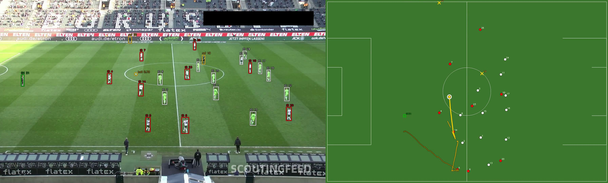
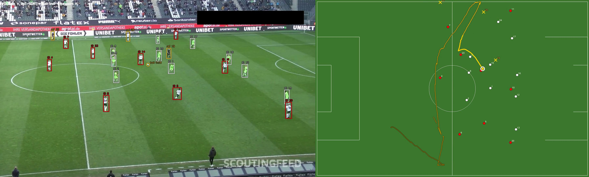

Broadcast football
One tactical camera in. Players, the goalkeeper, the referee, and the ball are detected and tracked, then placed on a measured pitch (105 × 68 m) with a homography. Pitch landmarks are fitted on each frame because the broadcast camera moves.

